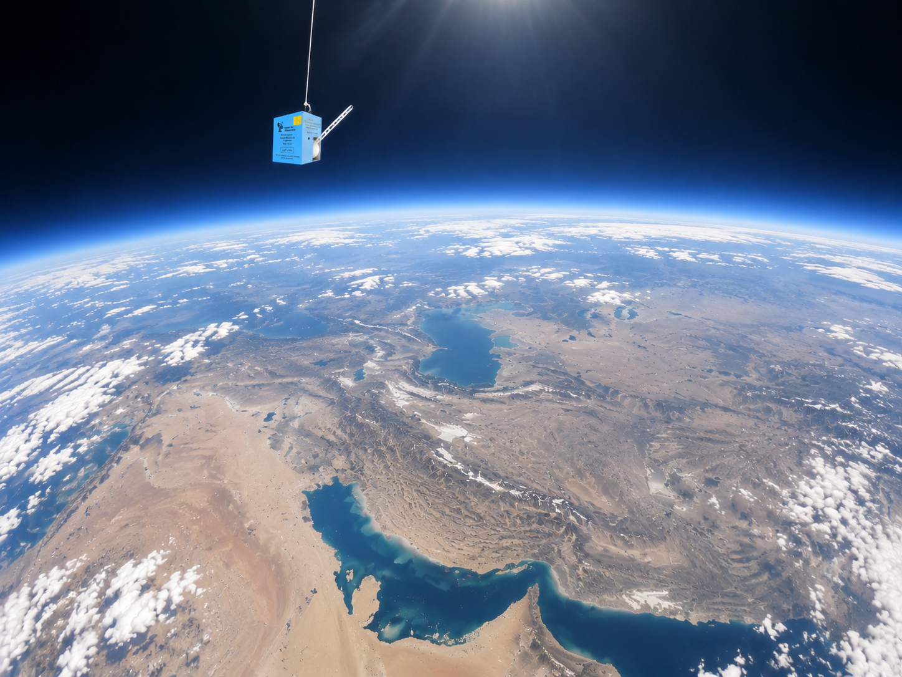

DIGISONDE®
DigiSonde radiosonde
A high-performance upper-air radiosonde designed for atmospheric profiling. DigiSonde integrates PTU sensors, GNSS positioning and digital telemetry to provide accurate meteorological observations from balloon-borne soundings.

DIGISONDE®
Upper-air telemetry for PTU and wind observations
DigiSonde is carried aloft by a weather balloon, measures atmospheric variables and transmits the observations to the ground station by radio. The integrated GNSS module provides accurate positioning and supports wind calculation, while pressure, temperature, relative humidity and wind observations are used to form the vertical atmospheric profile.
PTU measurement
You can edit the numbers later directly in the table cells below.
| Parameter | Range | Resolution | Accuracy |
|---|---|---|---|
| Pressure | 1050–3 hPa | 0.1 hPa | ±1 hPa |
| Temperature | −90–60 °C | 0.1 °C | ±0.5 °C |
| Relative humidity | 1–99 %RH | 0.1 %RH | ±3 %RH |
Wind measurement
You can edit the numbers later directly in the table cells below.
| Metric | Value |
|---|---|
| Wind speed resolution | 0.1 m/s |
| Wind speed accuracy | ±0.2 m/s |
| Wind direction resolution | 0.1° |
| Wind direction accuracy | ±1° |
| Position resolution | 0.1 m |
| Position accuracy | 5 m |
| Wind calculation | GPS C/A coded approach |
| Measurement rate | 1 Hz |
Telemetry & general
You can edit the numbers later directly in the table cells below.
| Metric | Value |
|---|---|
| Frequency | 400–406 MHz |
| Output power | 100 mW |
| Modulation | Digital FSK · 1200 baud |
| Weight | 200 g including batteries |

COMPARISON ASCENT TESTS
DigiSonde in comparative sounding tests
Field photographs from comparative ascents conducted alongside other operational radiosondes. The images document the test setups and do not, by themselves, imply comparative performance results.